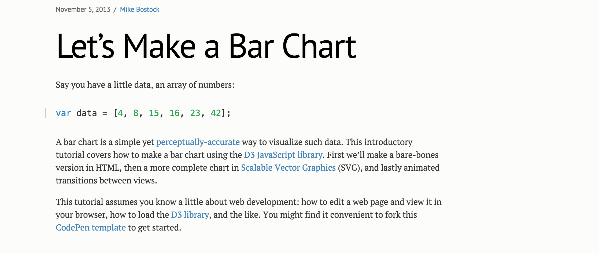
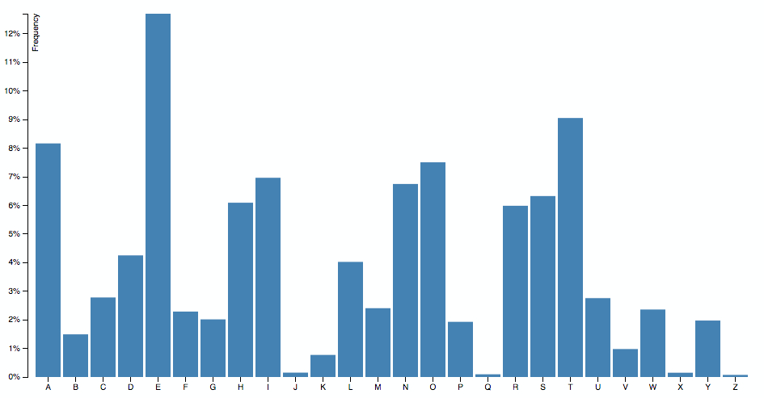

The standard way
The Standard Way is just the way we usually find D3 code on the Internet
I will use a different example to show it
Code example

Bar chart example by Mike Bostock
Simplest example
One of my first contacts with D3 was via this article
Although there is not a lot of code, there is a lot of stuff happening here.
Let's dive into it
Prepare container
var svg = d3.select("svg"),
margin = {top: 20, right: 20, bottom: 30, left: 40},
width = +svg.attr("width") - margin.left - margin.right,
height = +svg.attr("height") - margin.top - margin.bottom;
var g = svg.append("g")
.attr("transform", "translate(" + margin.left + "," + margin.top + ")");
Reference: Margin Convention
First D3 pattern: Mike Bostock Margin Convention
It can be considered a hack, but only once per chart
T: Before discovering this pattern, moving stuff was hard
Setting up scales
// Creates scales and gives them ranges
var x = d3.scaleBand().rangeRound([0, width]).padding(0.1),
y = d3.scaleLinear().rangeRound([height, 0]);
Reference: Scales tutorial
Scales are functions that glue data and pixels
T: Input domain, output range
Loading data
d3.tsv("data.tsv", function(d) {
d.frequency = +d.frequency;
return d;
}, function(error, data) {
if (error) throw error;
// Chart Code here
});
Callback pattern
Cleaning function that coerces the values to be a number with this JS hack
Drawing axes
// Updates domain of scales
x.domain(data.map(function(d) { return d.letter; }));
y.domain([0, d3.max(data, function(d) { return d.frequency; })]);
// Draws X axis
g.append("g")
.attr("class", "axis axis--x")
.attr("transform", "translate(0," + height + ")")
.call(d3.axisBottom(x));
// Draws Y axis
g.append("g")
.attr("class", "axis axis--y")
.call(d3.axisLeft(y).ticks(10, "%"))
.append("text")
.attr("transform", "rotate(-90)")
.attr("y", 6)
.attr("dy", "0.71em")
.attr("text-anchor", "end")
.text("Frequency");
Set the domain of the scales, dependent on the data
Creates the Axis, that are visual representations of those scales
Draws the x and y axes, labeling the latter
T: Note the weird indentation. When a selection is being changed, we use 2 spaces.
Drawing bars
g.selectAll(".bar")
.data(data)
.enter()
.append("rect")
.attr("class", "bar")
.attr("x", function(d) { return x(d.letter); })
.attr("y", function(d) { return y(d.frequency); })
.attr("width", x.bandwidth())
.attr("height", function(d) { return height - y(d.frequency); });
Here we see the Enter pattern, where for each data entry, we add a new SVG rectangle
Output

So, now we have a bar chart that works right?
Well… it’s true, it works, and probably you could copy this code, modify it a bit and use it somewhere in your website.
But I don't think this is good-quality code.
Standard D3: drawbacks
Monolithic functions
Chained method calls
Hard to change code
Impossible to reuse
Delicate
Read from top to bottom to know what is doing
Compact code that is not really flexible
Hardcoded values and strings
Reuse is copy/paste, not DRY
Won’t know if it works after modifying any line of code
Let's see what this has to do with my story
The TDD way
Cool! Are you still with me?
We have seen the problems of example based code and a solution, the Reusable Chart API.
Solution allows us to test, opening a new world of possibilities. Among them is to Test Driven our Charts.
Craft the same bar chart test-by-test
T: I will skip some steps
The "before" block
container = d3.select('.test-container');
dataset = [
{ letter: 'A',
frequency: .08167
},{
letter: 'B',
frequency: .01492
},...
];
barChart = barChart();
container.datum(dataset).call(barChart);
3 things: container, data and chart instance
call chart with the container which has the data attached
T: datum adds the data, but doesn't do a join
Test: basic chart
it('should render a chart with minimal requirements', function(){
expect(containerFixture.select('.bar-chart').empty()).toBeFalsy();
});
Several ways of checking for an element
Code: basic chart
return function module(){
var margin = {top: 20, right: 20, bottom: 30, left: 40},
width = 960, height = 500,
svg;
function exports(_selection){
_selection.each(function(_data){
var chartWidth = width - margin.left - margin.right,
chartHeight = height - margin.top - margin.bottom;
if (!svg) {
svg = d3.select(this)
.append('svg')
.classed('bar-chart', true);
}
});
};
return exports;
}
Reference: Towards Reusable Charts
Test: containers
it('should render container, axis and chart groups', function(){
expect(containerFixture.select('g.container-group').empty()).toBeFalsy();
expect(containerFixture.select('g.chart-group').empty()).toBeFalsy();
expect(containerFixture.select('g.x-axis-group').empty()).toBeFalsy();
expect(containerFixture.select('g.y-axis-group').empty()).toBeFalsy();
});
Code: containers
function buildContainerGroups(){
var container = svg
.append('g')
.classed('container-group', true)
.attr('transform', 'translate(' + margin.left + ',' + margin.top + ')');
container.append("g").attr("class", "chart-group");
container.append("g").attr("class", "x-axis-group axis");
container.append("g").attr("class", "y-axis-group axis");
}
Test: axes
it('should render an X and Y axes', function(){
expect(containerFixture.select('.x-axis-group.axis').empty()).toBeFalsy();
expect(containerFixture.select('.y-axis-group.axis').empty()).toBeFalsy();
});
Public effects are the axis elements on the DOM
Code: scales
function buildScales(){
xScale = d3.scaleBand()
.rangeRound([0, chartWidth]).padding(0.1)
.domain(data.map(getLetter));
yScale = d3.scaleLinear()
.rangeRound([chartHeight, 0])
.domain([0, d3.max(data, getFrequency)]);
}
Creating after getting data
Code: axes
function buildAxis(){
xAxis = d3.axisBottom(xScale);
yAxis = d3.axisLeft(yScale)
.ticks(10, '%');
}
Code: axes drawing
function drawAxis(){
svg.select('.x-axis-group.axis')
.append("g")
.attr("class", "axis axis--x")
.attr("transform", "translate(0," + chartHeight + ")")
.call(xAxis);
svg.select(".y-axis-group")
.append("g")
.attr("class", "axis axis--y")
.call(yAxis)
.append("text")
.attr("transform", "rotate(-90)")
.attr("y", 6)
.attr("dy", ".71em")
.style("text-anchor", "end")
.text("Frequency");
}
remember we first need the groups and svg
Test: bars drawing
it('should render a bar for each data entry', function(){
var numBars = dataset.length;
expect(containerFixture.selectAll('.bar').size()).toEqual(numBars);
});
Counting bars and data length
Code: bars drawing
function drawBars(){
// Setup the enter, exit and update of the actual bars in the chart.
// Select the bars, and bind the data to the .bar elements.
var bars = svg.select('.chart-group').selectAll(".bar")
.data(data);
// Create bars for the new elements
bars.enter()
.append('rect')
.attr("class", "bar")
.attr("x", function(d) { return xScale(d.letter); })
.attr("y", function(d) { return yScale(d.frequency); })
.attr("width", xScale.rangeBand())
.attr("height", function(d) { return chartHeight - yScale(d.frequency); });
}
Reference: Thinking with joins , General Update Pattern
Enter: creates elements as needed
Test: margin accessor
it('should provide margin getter and setter', function(){
var previous = barChart.margin(),
expected = {top: 4, right: 4, bottom: 4, left: 4},
actual;
barChart.margin(expected);
actual = barChart.margin();
expect(previous).not.toBe(expected);
expect(actual).toBe(expected);
});
Code: margin accessor
exports.margin = function(_x) {
if (!arguments.length) return margin;
margin = _x;
return this;
};
All-in-one getter and setter
Looks the same, but is not
Final code: standard way
var svg = d3.select("svg"),
margin = {top: 20, right: 20, bottom: 30, left: 40},
width = +svg.attr("width") - margin.left - margin.right,
height = +svg.attr("height") - margin.top - margin.bottom;
var x = d3.scaleBand().rangeRound([0, width]).padding(0.1),
y = d3.scaleLinear().rangeRound([height, 0]);
var g = svg.append("g")
.attr("transform", "translate(" + margin.left + "," + margin.top + ")");
d3.tsv("data.tsv", function(d) {
d.frequency = +d.frequency;
return d;
}, function(error, data) {
if (error) throw error;
x.domain(data.map(function(d) { return d.letter; }));
y.domain([0, d3.max(data, function(d) { return d.frequency; })]);
g.append("g")
.attr("class", "axis axis--x")
.attr("transform", "translate(0," + height + ")")
.call(d3.axisBottom(x));
g.append("g")
.attr("class", "axis axis--y")
.call(d3.axisLeft(y).ticks(10, "%"))
.append("text")
.attr("transform", "rotate(-90)")
.attr("y", 6)
.attr("dy", "0.71em")
.attr("text-anchor", "end")
.text("Frequency");
g.selectAll(".bar")
.data(data)
.enter()
.append("rect")
.attr("class", "bar")
.attr("x", function(d) { return x(d.letter); })
.attr("y", function(d) { return y(d.frequency); })
.attr("width", x.bandwidth())
.attr("height", function(d) { return height - y(d.frequency); });
});
Final code: TDD way
return function module(){
var margin = {top: 20, right: 20, bottom: 30, left: 40},
width = 960, height = 500,
chartWidth, chartHeight,
xScale, yScale,
xAxis, yAxis,
data, svg;
function exports(_selection){
_selection.each(function(_data){
chartWidth = width - margin.left - margin.right;
chartHeight = height - margin.top - margin.bottom;
data = _data;
buildScales();
buildAxis();
buildSVG(this);
drawBars();
drawAxis();
});
}
function buildContainerGroups(){ ... }
function buildScales(){ ... }
function buildAxis(){ ... }
function drawAxis(){ ... }
function drawBars(){ ... }
// Accessors to all configurable attributes
exports.margin = function(_x) { ... };
return exports;
};
TDD way - benefits
Stress free refactors
Goal oriented
Deeper understanding
Improved communication
Quality, production ready output
D3 is hard. There is a high chance that your first solution won't be the best. With the TDD way you won’t be afraid of touching your charts anymore.
As TDD forces you to have a clear idea of what you want to do
Learn more about the D3 API.
Create a documentation that does not get outdated. Small and specific code that can be understood easily.
Charts will be a first-class citizen inside your repo. Refactors, no rewrites.